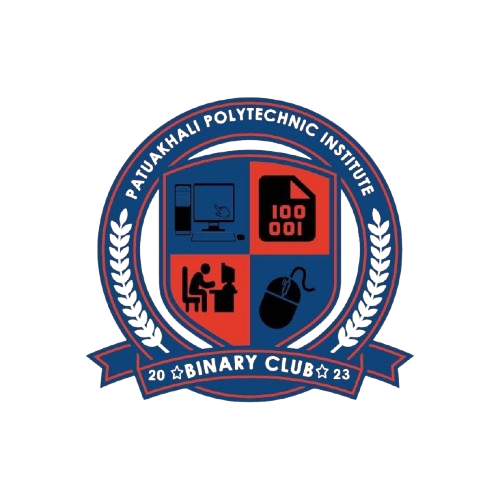

Computer Dept. Binary Club
Computer Department Binary Club is a stimulating platform for technology-loving students, which
provides opportunities for skill enhancement and creativity development in various areas of
computer science. This club is a powerhouse for working with modern technology and innovative
ideas, where members try to invent new things in collaboration with each other. The club works
to enhance students' creativity, problem-solving skills, and investigative thinking through
various activities.
Main aims and objectives of the club
- Enhancement of technical
skills: The club creates an environment where students can work on various
aspects of modern technologies including programming, web development, data science,
artificial intelligence (AI), and machine learning (ML), improving their technical skills.
- Creative Thinking and
Innovation: Club members develop creative thinking and an innovative mindset by
participating in projects.
- Enhancing Problem Solving
Skills: Students gain experience in solving real-life problems through various
club competitions and projects.
- Networking and Leadership:
The club creates an environment for students to develop friendships and professional
relationships and acquire leadership qualities.
Club activities and events
- Programming Workshops: The
club regularly organizes workshops on programming languages, frameworks, and tools, where
students can learn coding techniques and practical applications.
- Hackathons and Competitions:
Students can test their creativity and technical skills by participating in hackathons and
various project competitions.
- Seminars and Guest Lectures:
Experienced professionals from various fields of information technology come to the club to
give seminars and lectures, helping students develop new perspectives and thinking skills.
- Research and Innovation
Projects: The club encourages members to participate in research projects,
fostering research and innovative thinking.
Club membership opportunities
As a member of the Binary Club, students gain the
opportunity to work in-depth with modern technology and hone their skills. Members develop
themselves more fully through mutual cooperation, teamwork, and learning from each other.
Conclusion
The Computer Department Binary Club is a platform where
students develop their skills and knowledge through technology. The club aims to build a modern
and innovative society by enhancing students' technological skills and preparing them for a
technology-led future.